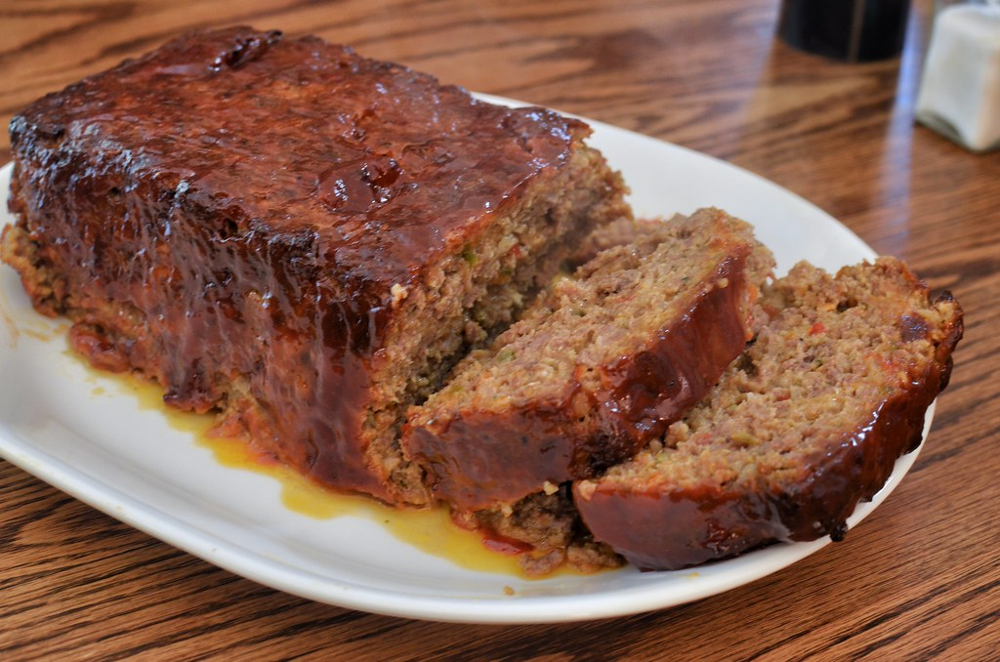
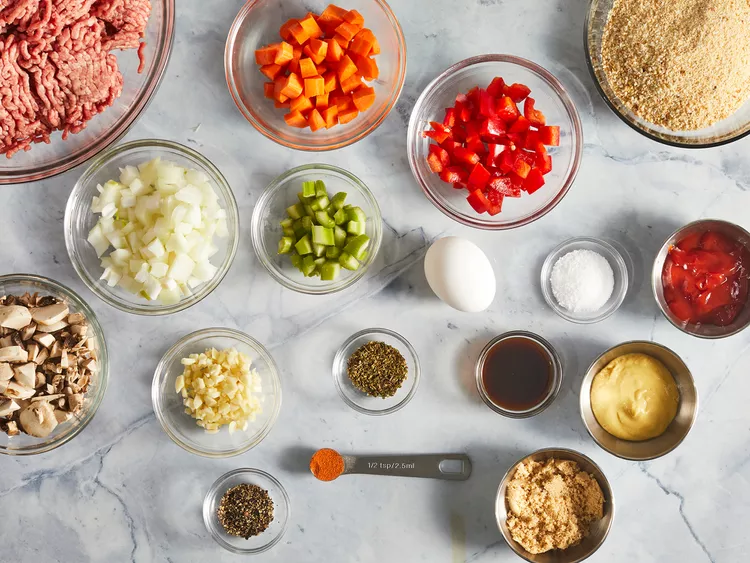
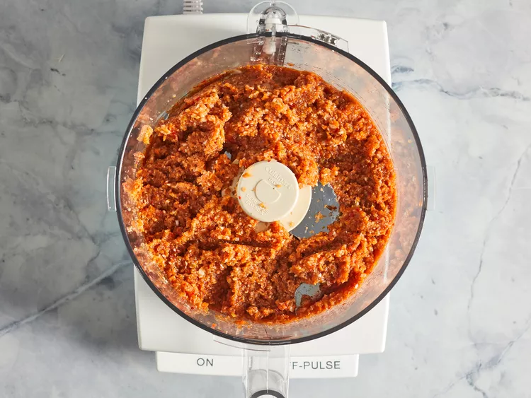
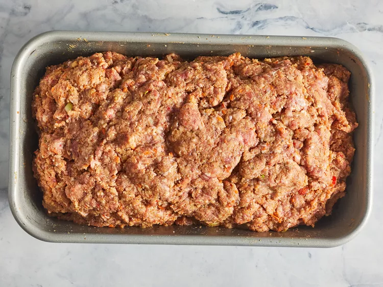
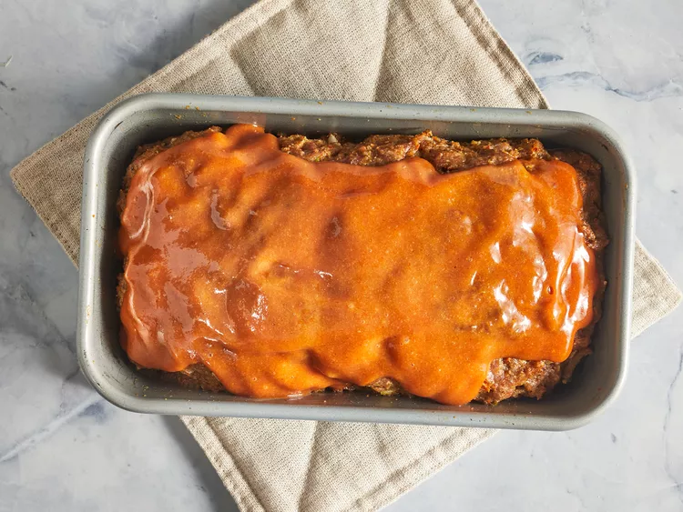
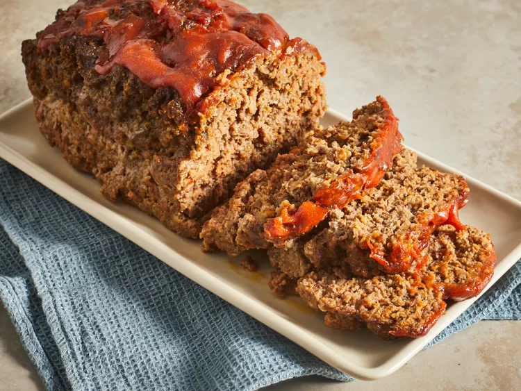

Classic Meatloaf
Home

Classic Meatloaf
This traditional meatloaf recipe made with sautéed vegetables, spices, and bread crumbs is moist and flavorful and topped with an old-fashioned glaze. Cook time will depend on the size and shape of your loaf, as well as the type of baking pan you use. Serve this hearty meal on cool fall or winter evenings with mashed potatoes and a simple mushroom gravy.
Meatloaf Ingredients:
• 1 medium carrot, coarsely chopped
• 1 rib celery, coarsely chopped
• ½ medium onion, coarsely chopped
• ½ medium red bell pepper, coarsely chopped
• 4 white mushrooms coarsely chopped
• 3 cloves garlic, coarsely chopped
• 2 ½ pounds ground chuck
• 1 tablespoon Worcestershire sauce
• 1 teaspoon dried Italian herbs
• 1 teaspoon ground black pepper
• ½ teaspoon cayenne pepper
• 1 cup plain bread crumbs
Glaze Ingredients:
• 2 tablespoons brown sugar
• 2 tablespoons dijon mustard
• 1 teaspoon Sriracha sauce, or to taste
Steps
- Gather all ingredients

Credit: Dotdash Meredith Food Studios
- Preheat the oven to 325 degrees F (165 degrees C). Line a baking dish with lightly greased foil
- Place carrot,celery,onion,bell pepper. mushrooms, and garlic in a food processor; pulse until very finely chopped, almost to a purée. Transfer to a large mixing bowl

Credit: Dotdash Meredith Food Studios
- Add ground chuck to the vegetables, along with Worcestershire sauce, egg, Italian herbs, salt, black pepper, and cayenne. Mix gently with a wooden spoon until ingredients are just combined. Sprinkle in bread crumbs and gently mix with your fingertips until just combined; don't overmix.
- Shape the mixture into a loaf, about 4 inches high by 6 inches across. Place in the prepared baking pan.

Credit: Dotdash Meredith Food Studios
- Bake in the preheated oven just until the meatloaf is hot, about 15 minutes.
- Meanwhile, stir brown sugar,ketchup, dijon, and Sriracha for glaze in a small bowl until brown sugar has dissolved.
- Remove meatloaf from the oven. Spoon glaze on the top of the meatloaf with the back of a spoon, then pull a tiny bit of glaze down the sides.

Credit: Dotdash Meredith Food Studios
- Return to the oven, and bake until no longer pink inside, 45 to 75 more minutes. An instant-read thermometer inserted into the thickest part of the loaf should read at least 160 degrees F (70 degrees C), so start checking at 45 minutes and continue baking until meatloaf reaches that temperature. Cooking time will depend on shape and thickness of the meatloaf.
- Serve hot and enjoy!

Credit: Dotdash Meredith Food Studios